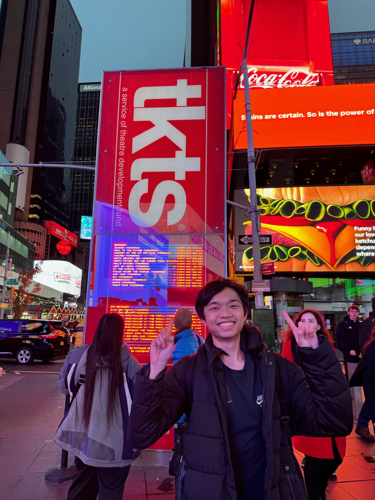

Hi, I'm Tyrone.
I'm a student at Brown University studying Computer Science and Economics.
I'm a research assistant at Brown's E-GLAMOR Group. I'm interested in using LLMs for strategic game playing and multi-agent systems.
Thanks for dropping by!
Research
Internalizing World Models for Game Playing in Lightweight Large Language Models
Tyrone Serapio, Haoyang Xu, Arjun Prakash, Amy Greenwald
AAMAS Strategic Engineering Workshop, 2026 (Poster)
arXivSpectral Collapse Drives Loss of Plasticity in Deep Continual Learning
Naicheng He, Kaicheng Guo, Arjun Prakash, Saket Tiwari, Ruo Yu Tao, Tyrone Serapio, Amy Greenwald, George Konidaris
NeurIPS ARLET Workshop, 2025
arXivProjects
Market-based LLM Coordination
Multi-agent simulations for scenarios like real-world delivery tasks, implementing prediction markets and Vickrey auctions to coordinate LLM agents.
GitHub